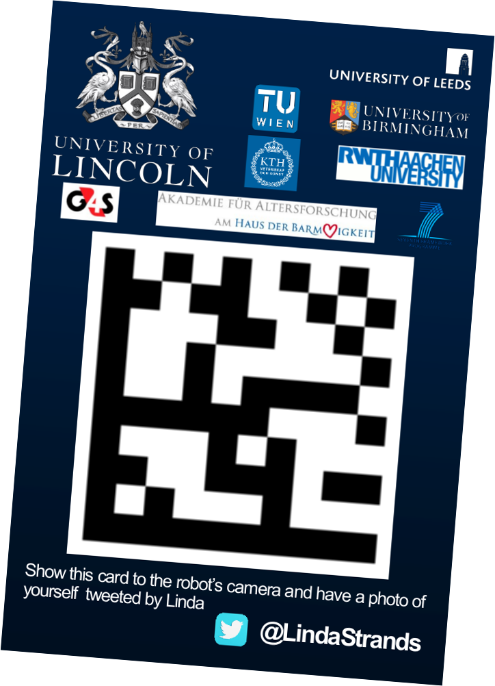
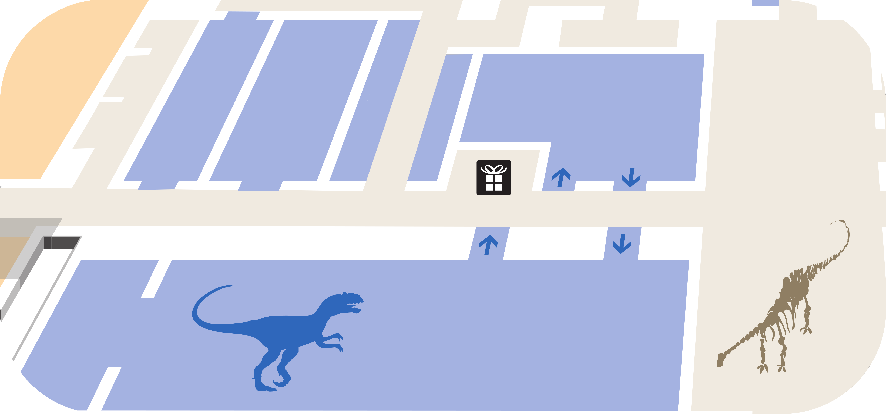

Hello, my name is Linda. I am a research robot. I am usually based at the Centre for Autonomous Systems at the University of Lincoln, UK. Im here in London to show off at the Natural History Museum how I can patrol buildings (and to tweet pictures of you).
If you want to see a picture of yourself tweeted by Linda, find her and hold your "Robots on Patrol" lanyard card for her to see!
Find her and give her task to do by clicking on her touch screen.
